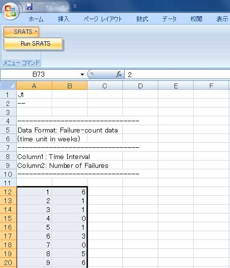
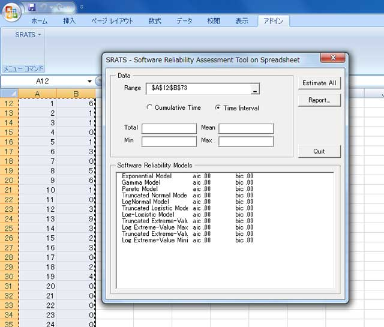
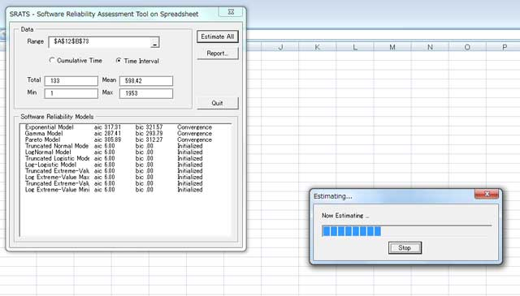
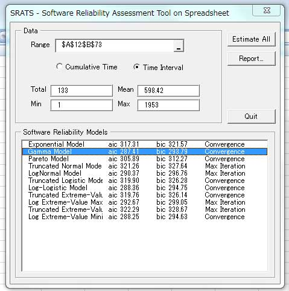
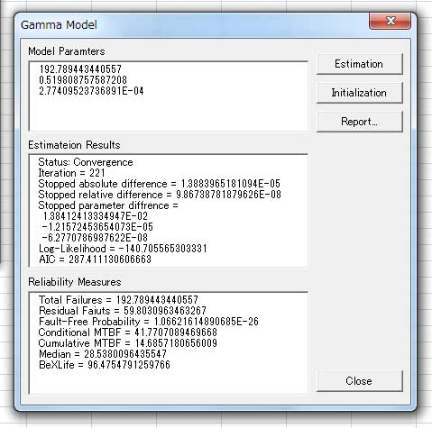
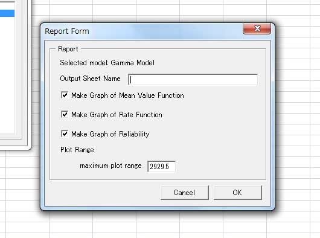
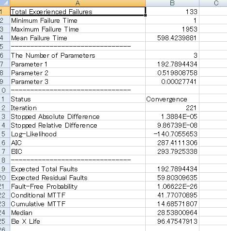
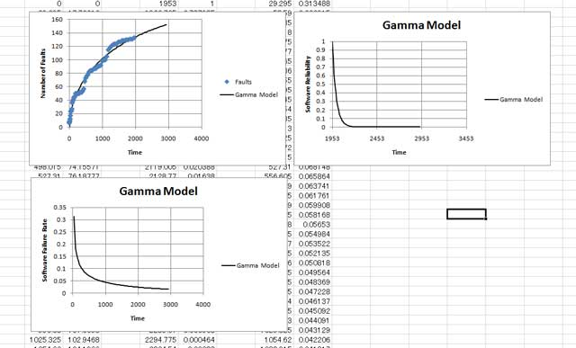

基本操作
概要
ここでは SRATS2010 の一連の操作方法を説明します．基本的な操作の流れは- フォールトデータの選択
- SRATS2010の起動
- パラメータの推定＆モデル選択
- レポート出力
データ選択
フォールトデータは Excel のシートから入力形式となります．データ形式は縦方向のセルに時系列のデータとして入力します．SRATS2010 では次の３つのデータ形式を扱えます．- 障害時間データ
- 障害時間データは一つの列で表される形式で，障害が発見された時間を一つの列に記述します．下の表は障害時間データの例（時間間隔版，累積時間版）です．時間間隔版の方は，最初の障害がテスト開始後３日目（あるいは ３ CPU 時間など）で発見され，さらに２番目の障害が最初の障害から 33 日後に発見され，以下同様に，先の障害から次の障害発生までの時間間隔を表しています．累積時間版の方は，累積時間で表したもので初期時刻からはかって何時障害が起きたかを表しています．時間間隔版，累積時間版のどちらも１コラムで表現されます．
障害時間データの例
時間間隔 3 33 12 ... 累積時間 3 36 48 ... - 障害個数データ
- 障害個数データは二つの列で表される形式で，一つ目の列には時間間隔または累積時間，二つ目の列にはその時間区間で発見された障害の個数を記述します．最も使いやすい形式と思います．下の表は障害個数データの例（時間間隔版，累積時間版）です．時間間隔版の方は，テスト工数 100 （人日，CPU時間など）に対して 4 件の障害が発見され，次にテスト工数 10 に対して 1 件の障害が発見され，以下同様に，時系列的に実行したテスト工数と発生障害件数を表現しています．累積時間版の方は，時間間隔版の第１コラムを累積時間で表したものです（障害件数は累積ではないことに注意）．時間間隔版，累積時間版のどちらも２コラムで表現されます．
障害個数データの例
時間間隔 障害件数 100 4 10 1 25 0 ... ... 累積時間 障害件数 100 4 110 1 135 0 ... ... - 時間・個数を含む一般的な形式
- 一般形は時間データ，個数データのどちらも表現でき，且つ，より詳細な表現が可能です．一列目には時間区間，二列目にはその時間区間で発見された障害の個数，三列目には時間区間の最後で（ちょうどで）障害が発見されたかどうかを 0 （発見されない）もしくは 1 （発見された）で表します．
三列目がすべて 0 の場合は個数データと同じになり，二列目がすべて 0 で三列目がすべて 1 の場合は時間データと同じになります．そのため，VBA や DLL 内では，この形式ですべて処理しています（時間・個数データから変換している）．この形式が必要な典型的な例を下に示します．最後の行を除くとこれは時間データと同じですが，最後の行は最後の障害が発見されてから12時間（日数，CPU時間）経過しているが障害が起きなかったことを示しています．最後に障害が起きなかった時間を考慮することは正確な信頼度推定に影響するので注意してください（FAQ: 「SRATS にあった Current がなくなったのですか？」を参照）一般形式データの例
時間間隔 障害件数 時間区間終わりの障害件数 3 0 1 33 0 1 12 0 1 ... ... ... 52 0 1 12 0 0 累積時間 障害件数 時間区間終わりの障害件数 3 0 1 36 0 1 48 0 1 ... ... ... 1933 0 1 1945 0 0
すべてのデータの形式は縦方向のセルに時系列のデータとして入力し，第１列目は時間間隔，累積時間のいずれでも対応できます．SRATS2010 のフォーム上で，第１列目が時間間隔の場合は Time Interval，第１列目が累積時間の場合は Cumulative Time を選んでください．
SRATS2010 内で，時間・個数・一般形データの判別は選択したデータの列数で判断しています．つまり，１列だけ選んだ場合は障害時間データ，２列選んだ場合は障害個数データ，３列選んだ場合は一般形とみなして処理をします．
起動
SRATS2010 は Excel 上のアドインとして動作します．データを選択した状態からメニューバーあるいはアドインタブから「SRATS -> RunSRATS」を選択するとメインフォームが表示されます（図１，図２）．このとき，選択したデータが Data の Range に記述されていることを確認してください（メインフォーム起動後に Range の Refedit 機能でデータを選ぶこともできます．ただし，Refedit ではうまく動かないことがあるので，データ選択後に RunSRATS する方法をおすすめします）．

パラメータ推定とモデル選択
選択したデータにモデルをフィットさせるために，パラメータ推定を行います．モデル毎に推定を行うこともできますが，ここではすべてのモデルを推定するためにメインフォームの「Estimate All」ボタンを押します．プログレスバーのフォームが表示されすべてのモデルのパラメータ推定を行います（図３）．初期値および収束判定は自動で行います．
推定が完了するとメインフォームの下部に推定結果のサマリーを表示します（現時点では AIC と BIC）．さらに，推定結果の状態を各モデルについて表示します．状態は Convergence と MaxIteration で Convergence は収束基準に達した状態，MaxIteration は推定において最大繰り返し回数に達して終了したことを表しています（図４）．
サマリーからモデルを選択し，ダブルクリックすることで詳細フォームを開くことができます（図５）．詳細フォームでは，単一モデルの推定「Estimation」，初期化「Initialization」，レポート出力「Report」が行えます．また，各モデルで評価した信頼性尺度も表示されます．
推定されたモデルの中から最良のモデルを選びます．サマリーに表示されている AIC または BIC で最小となるモデルが最良モデルとなります．



レポート出力
SRATS2010 では一つのモデルに対する詳細な結果を Excel シートに出力します．サマリー上でモデルを選択し，メインフォーム画面上の「Report」をクリックするとレポート出力画面が表示されます（図６）．ここでは結果を出力するシートの名称（空白でもかまいません），平均値関数（期待累積フォールト数）のグラフ作成（「Make Graph of Mean Value Function」），障害発見率のグラフ作成（「Make Graph of Rate Function」），信頼度関数のグラフ作成（「Make Graph of Reliability」）を行うかどうかをチェックします．さらに，Plot Range では，グラフの横軸（時間軸）の最大値の設定ができます．デフォルトでは障害データにおける最大時間の 1.5 倍に設定されます．これらの値を入力後に「OK」ボタンをクリックすることで，シートへの出力を行います．
出力されるシートは２つであり，一つはモデルパラメータや評価尺度を記述したもの（図７），もう一つはグラフとその元となるデータを記述したシート（図８）です．



Last Updated (Monday, 17 May 2010 20:21)